Ampliação da análise CK • 2026-10-05T18:56:19.664889+00:00
5 contraste(s) época × métrica apresentaram diferença após a correção de 28 testes. Na comparação geral por IA, diferenças ajustadas em: RFC, WMC, LOC/método. No pareamento por época, versão conhecida e tamanho, diferenças ajustadas em: RFC, LOC/método.
Diferença estatística descreve associação entre grupos neste recorte. Não prova que a IA causou a diferença, nem que maior ou menor métrica representa, isoladamente, melhor qualidade. Não encontrar significância também não demonstra equivalência. A conclusão deve considerar os estratos e o pareamento, e não somente o agrupamento geral.
| Época | Grupo | Classificados | Elegíveis |
|---|---|---|---|
| E1 | sem_evidencia_detectada | 11 | 8 |
| E1 | com_evidencia | 9 | 8 |
| E2 | sem_evidencia_detectada | 424 | 187 |
| E2 | com_evidencia | 75 | 41 |
| E3 | sem_evidencia_detectada | 442 | 247 |
| E3 | com_evidencia | 58 | 48 |
| E4 | sem_evidencia_detectada | 396 | 250 |
| E4 | com_evidencia | 104 | 90 |
E1: 2009–2013; E2: 2014–2017; E3: 2018–2021; E4: 2022–coleta original. As épocas descrevem criação, não autoria histórica do código atual. "Sem evidência detectada" é ausência dos sinais procurados, não prova de desenvolvimento sem IA.
Seleção: primeiros 500 por época na ordem original de estrelas, push e ID; todos os 20 de E1. Não é uma amostra probabilística. O tamanho das células depende das evidências e dos critérios técnicos; não foram removidos negativos para tornar os grupos artificialmente iguais.
Medianas entre repositórios; cada repositório contribui uma vez. A coluna LOC é código físico contado uma vez por arquivo.
| ia_status | total_loc | classes | avg_cbo | avg_rfc | avg_wmc | avg_loc_method | avg_lcom |
|---|---|---|---|---|---|---|---|
| com_evidencia | 1.744e+04 | 341 | 5.992 | 9.849 | 6.185 | 6.635 | 0.2298 |
| sem_evidencia_detectada | 7434 | 199.5 | 5.825 | 7.697 | 4.964 | 5.712 | 0.2173 |
Mann–Whitney bilateral. p_adjusted: Bonferroni de sete métricas dentro da época; p_adjusted_across_4_epochs: Bonferroni de 28 testes no conjunto das quatro épocas. Delta de Cliff segue "sem evidência menos com evidência": negativo indica valores maiores no grupo com evidência. N menor que dois em qualquer grupo é insuficiente.
| family | metric | n_a | n_b | p_adjusted | p_adjusted_across_4_epochs | cliffs_delta_a_minus_b | status |
|---|---|---|---|---|---|---|---|
| IA_within_E1 | avg_cbo | 8 | 8 | 1 | 1 | 0.0625 | ok |
| IA_within_E1 | avg_rfc | 8 | 8 | 1 | 1 | -0.2188 | ok |
| IA_within_E1 | avg_wmc | 8 | 8 | 1 | 1 | 0.09375 | ok |
| IA_within_E1 | avg_loc_method | 8 | 8 | 0.7249 | 1 | -0.5 | ok |
| IA_within_E1 | avg_dit | 8 | 8 | 1 | 1 | -0.2812 | ok |
| IA_within_E1 | avg_noc | 8 | 8 | 1 | 1 | -0.2969 | ok |
| IA_within_E1 | avg_lcom | 8 | 8 | 1 | 1 | 0.375 | ok |
| IA_within_E2 | avg_cbo | 187 | 41 | 0.3225 | 1 | -0.1992 | ok |
| IA_within_E2 | avg_rfc | 187 | 41 | 0.03973 | 0.1589 | -0.2761 | ok |
| IA_within_E2 | avg_wmc | 187 | 41 | 0.07851 | 0.314 | -0.2532 | ok |
| IA_within_E2 | avg_loc_method | 187 | 41 | 0.8387 | 1 | -0.1553 | ok |
| IA_within_E2 | avg_dit | 187 | 41 | 0.5944 | 1 | -0.172 | ok |
| IA_within_E2 | avg_noc | 187 | 41 | 1 | 1 | -0.1195 | ok |
| IA_within_E2 | avg_lcom | 187 | 41 | 0.1541 | 0.6164 | -0.2286 | ok |
| IA_within_E3 | avg_cbo | 247 | 48 | 1 | 1 | -0.0749 | ok |
| IA_within_E3 | avg_rfc | 247 | 48 | 0.001963 | 0.007854 | -0.3315 | ok |
| IA_within_E3 | avg_wmc | 247 | 48 | 0.7 | 1 | -0.1501 | ok |
| IA_within_E3 | avg_loc_method | 247 | 48 | 0.218 | 0.8721 | -0.1967 | ok |
| IA_within_E3 | avg_dit | 247 | 48 | 1 | 1 | 0.01569 | ok |
| IA_within_E3 | avg_noc | 247 | 48 | 1 | 1 | -0.1087 | ok |
| IA_within_E3 | avg_lcom | 247 | 48 | 1 | 1 | 0.006579 | ok |
| IA_within_E4 | avg_cbo | 250 | 90 | 1 | 1 | -0.009867 | ok |
| IA_within_E4 | avg_rfc | 250 | 90 | 6.369e-07 | 2.548e-06 | -0.3799 | ok |
| IA_within_E4 | avg_wmc | 250 | 90 | 3.207e-06 | 1.283e-05 | -0.3585 | ok |
| IA_within_E4 | avg_loc_method | 250 | 90 | 3.024e-05 | 0.000121 | -0.3267 | ok |
| IA_within_E4 | avg_dit | 250 | 90 | 0.006071 | 0.02428 | 0.2368 | ok |
| IA_within_E4 | avg_noc | 250 | 90 | 0.3143 | 1 | 0.142 | ok |
| IA_within_E4 | avg_lcom | 250 | 90 | 0.7086 | 1 | -0.1165 | ok |
O contraste temporal não substitui a identificação de IA. Resultados gerais e separados por evidência, com Bonferroni de sete métricas por família:
| family | metric | n_a | n_b | p_adjusted | cliffs_delta_a_minus_b | status |
|---|---|---|---|---|---|---|
| E3_vs_E4_overall | avg_cbo | 295 | 340 | 0.4601 | -0.08462 | ok |
| E3_vs_E4_overall | avg_rfc | 295 | 340 | 4.445e-05 | -0.2076 | ok |
| E3_vs_E4_overall | avg_wmc | 295 | 340 | 1 | -9.97e-05 | ok |
| E3_vs_E4_overall | avg_loc_method | 295 | 340 | 0.0001204 | -0.1976 | ok |
| E3_vs_E4_overall | avg_dit | 295 | 340 | 0.4033 | 0.0873 | ok |
| E3_vs_E4_overall | avg_noc | 295 | 340 | 1 | 0.04078 | ok |
| E3_vs_E4_overall | avg_lcom | 295 | 340 | 0.1279 | 0.1085 | ok |
| E3_vs_E4_sem_evidencia_detectada | avg_cbo | 247 | 250 | 0.5291 | -0.09215 | ok |
| E3_vs_E4_sem_evidencia_detectada | avg_rfc | 247 | 250 | 0.01434 | -0.1599 | ok |
| E3_vs_E4_sem_evidencia_detectada | avg_wmc | 247 | 250 | 1 | 0.07372 | ok |
| E3_vs_E4_sem_evidencia_detectada | avg_loc_method | 247 | 250 | 0.02524 | -0.1509 | ok |
| E3_vs_E4_sem_evidencia_detectada | avg_dit | 247 | 250 | 1 | 0.02682 | ok |
| E3_vs_E4_sem_evidencia_detectada | avg_noc | 247 | 250 | 1 | -0.01679 | ok |
| E3_vs_E4_sem_evidencia_detectada | avg_lcom | 247 | 250 | 0.06073 | 0.1361 | ok |
| E3_vs_E4_com_evidencia | avg_cbo | 48 | 90 | 1 | -0.0338 | ok |
| E3_vs_E4_com_evidencia | avg_rfc | 48 | 90 | 0.1537 | -0.2375 | ok |
| E3_vs_E4_com_evidencia | avg_wmc | 48 | 90 | 0.4701 | -0.1898 | ok |
| E3_vs_E4_com_evidencia | avg_loc_method | 48 | 90 | 0.02475 | -0.3023 | ok |
| E3_vs_E4_com_evidencia | avg_dit | 48 | 90 | 0.1294 | 0.2442 | ok |
| E3_vs_E4_com_evidencia | avg_noc | 48 | 90 | 0.1583 | 0.2356 | ok |
| E3_vs_E4_com_evidencia | avg_lcom | 48 | 90 | 1 | 0.03889 | ok |
Kruskal–Wallis e Dunn são calculados no conjunto e em cada grupo IA, com as quatro épocas presentes e pelo menos dois repositórios por época. Dunn só é acionado após global bruto <0,05, corrigido por 42 comparações por família.
| family | metric | h | p_raw | p_adjusted_7 | status |
|---|---|---|---|---|---|
| all | avg_cbo | 6.664 | 0.0834 | 0.5838 | ok |
| all | avg_rfc | 31.7 | 6.056e-07 | 4.239e-06 | ok |
| all | avg_wmc | 19.47 | 0.0002187 | 0.001531 | ok |
| all | avg_loc_method | 21.48 | 8.355e-05 | 0.0005849 | ok |
| all | avg_dit | 27.87 | 3.86e-06 | 2.702e-05 | ok |
| all | avg_noc | 19.35 | 0.0002311 | 0.001618 | ok |
| all | avg_lcom | 28.57 | 2.754e-06 | 1.928e-05 | ok |
| all | total_loc | 21.66 | 7.669e-05 | — | ok |
| sem_evidencia_detectada | avg_cbo | 4.436 | 0.218 | 1 | ok |
| sem_evidencia_detectada | avg_rfc | 20.11 | 0.0001607 | 0.001125 | ok |
| sem_evidencia_detectada | avg_wmc | 20.63 | 0.0001258 | 0.0008805 | ok |
| sem_evidencia_detectada | avg_loc_method | 8.555 | 0.03583 | 0.2508 | ok |
| sem_evidencia_detectada | avg_dit | 8.437 | 0.03779 | 0.2645 | ok |
| sem_evidencia_detectada | avg_noc | 8.299 | 0.04022 | 0.2815 | ok |
| sem_evidencia_detectada | avg_lcom | 21.81 | 7.13e-05 | 0.0004991 | ok |
| sem_evidencia_detectada | total_loc | 9.583 | 0.02246 | — | ok |
| com_evidencia | avg_cbo | 4.754 | 0.1907 | 1 | ok |
| com_evidencia | avg_rfc | 5.877 | 0.1178 | 0.8244 | ok |
| com_evidencia | avg_wmc | 5.565 | 0.1348 | 0.9438 | ok |
| com_evidencia | avg_loc_method | 13.91 | 0.003037 | 0.02126 | ok |
| com_evidencia | avg_dit | 27.84 | 3.929e-06 | 2.75e-05 | ok |
| com_evidencia | avg_noc | 18.62 | 0.0003281 | 0.002297 | ok |
| com_evidencia | avg_lcom | 14.23 | 0.002611 | 0.01828 | ok |
| com_evidencia | total_loc | 7.291 | 0.06317 | — | ok |
Resultados Dunn · Medianas, Q1, Q3 e IQR por época × IA
132 pares 1:1, sem reutilização de controles, mesma época, mesma versão principal de Boot declarada e identificada e LOC dentro de fator 2. A atribuição minimiza distância de log(LOC), com termos menores de estrelas e idade. Não utiliza métricas CK de resultado. Versões desconhecidas ou múltiplas ficam fora deste controle. Ele não garante equivalência de domínio, maturidade ou proporção de código produzido com IA.
Auditoria de metadados: 17 catálogos Gradle foram conferidos por coordenadas e referências TOML no mesmo commit. Após detectar a confusão entre um plugin Docker e o Boot, o procedimento foi aplicado a todos os elegíveis desse formato, preservando as versões originais. Essa é uma emenda de qualidade posterior à primeira análise, sem alterar as métricas CK ou a inclusão principal. Fontes, hashes e correções dos catálogos.
| metric | n_pairs | p_adjusted | rank_biserial_ia_minus_control | median_paired_difference | status |
|---|---|---|---|---|---|
| avg_cbo | 132 | 1 | 0.08271 | 0.002118 | ok |
| avg_rfc | 132 | 0.01512 | 0.3078 | 1.571 | ok |
| avg_wmc | 132 | 0.1848 | 0.2228 | 0.864 | ok |
| avg_loc_method | 132 | 0.02876 | 0.288 | 0.8127 | ok |
| avg_dit | 132 | 0.3857 | -0.1925 | -0.04592 | ok |
| avg_noc | 132 | 1 | -0.1317 | -0.005365 | ok |
| avg_lcom | 132 | 0.3453 | 0.1973 | 0.02129 | ok |
Wilcoxon bilateral para pares, com Bonferroni de sete métricas. Aqui o efeito é "com IA menos controle", por isso o sinal tem orientação diferente do delta nas tabelas não pareadas. Pares e distâncias de covariáveis · Resultados completos por época
A análise de cobertura ≥95% contém 880 repositórios. É exploratória, pois omissões podem não ser aleatórias. Outros controles: faixas de LOC, Boot, época × LOC, código de produção, densidades por KLOC e exclusão de sinais ambíguos de IA, nomes de classes duplicados ou candidatos educacionais sinalizados. A sensibilidade no_review_only_positive exclui o grupo conservador Coderabbit, coderabbitai[bot], Qodo/Codium, qodo-merge-pro[bot] e sourcery-ai[bot]; é uma regra de ambiguidade e não comprova uso exclusivo para revisão.
Sensibilidades da análise principal · Comparações com cobertura ≥95% · Controles com cobertura ≥95% · Motivo principal de exclusão por época e IA · Distribuição das versões do Spring Boot. As famílias exploratórias são corrigidas separadamente; não existe correção única sobre todos os estratos explorados.
Os boxplots omitem a exibição dos pontos extremos para facilitar a leitura; os cálculos e os testes mantêm todos os valores elegíveis. Quartis são descritivos, não intervalos de confiança.
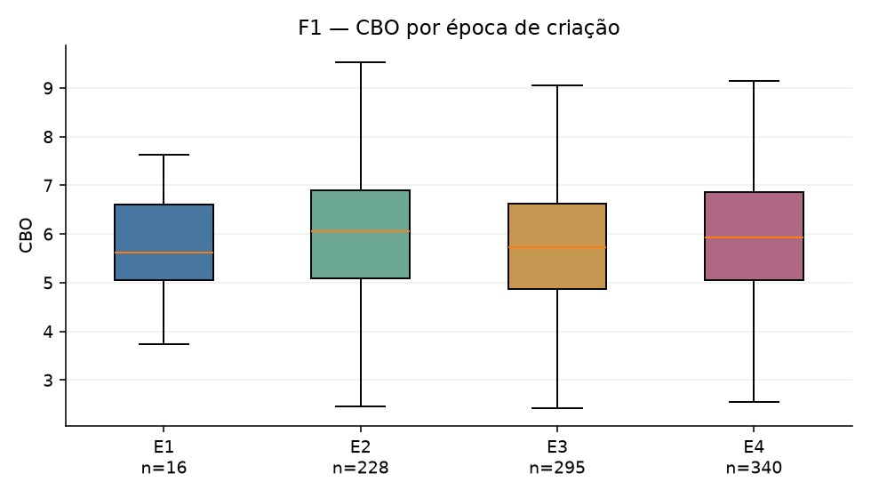
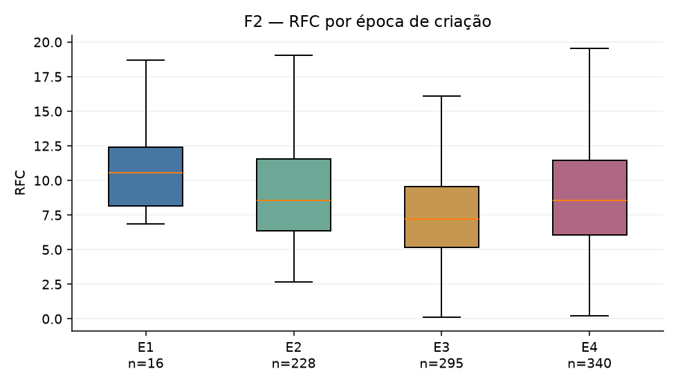
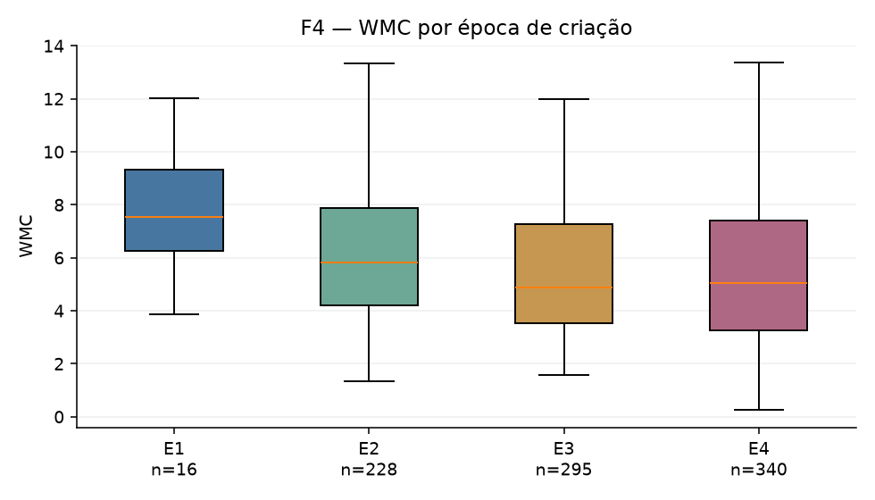
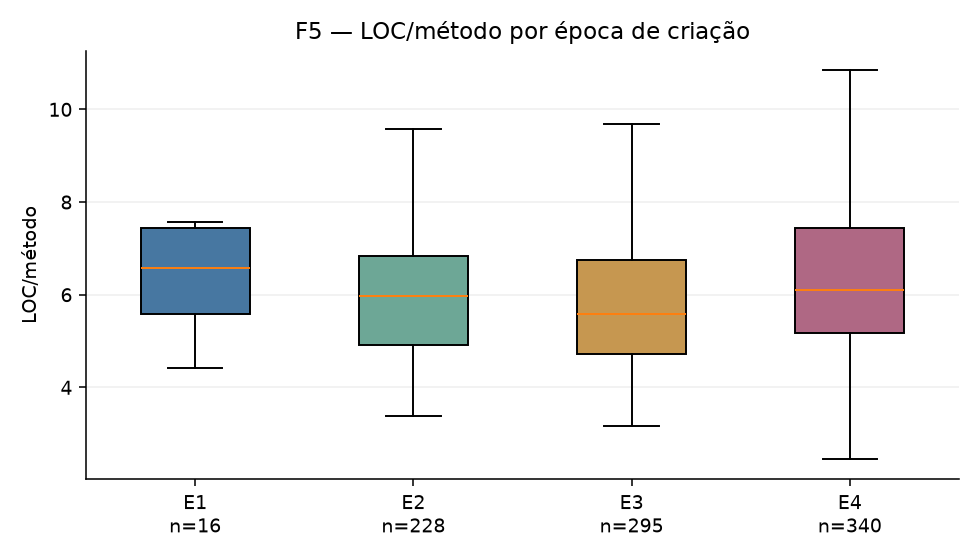
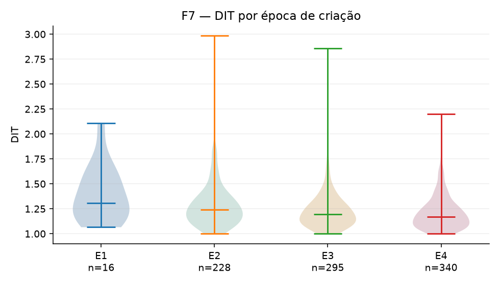
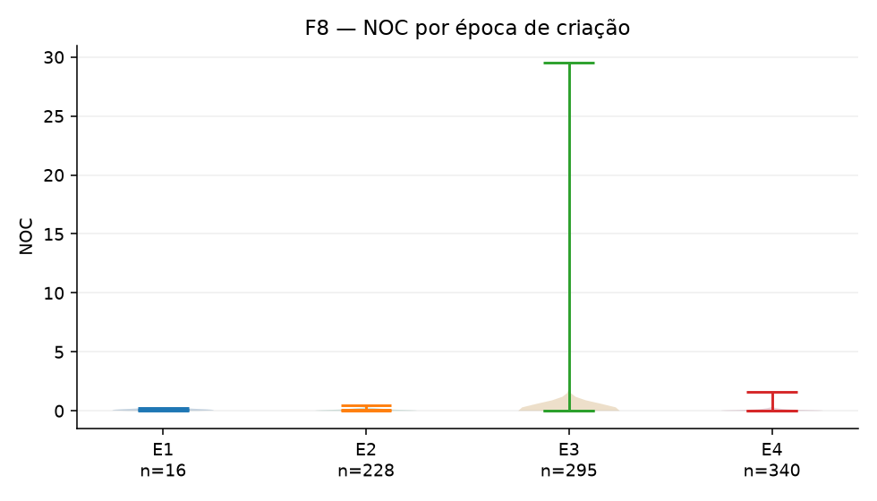
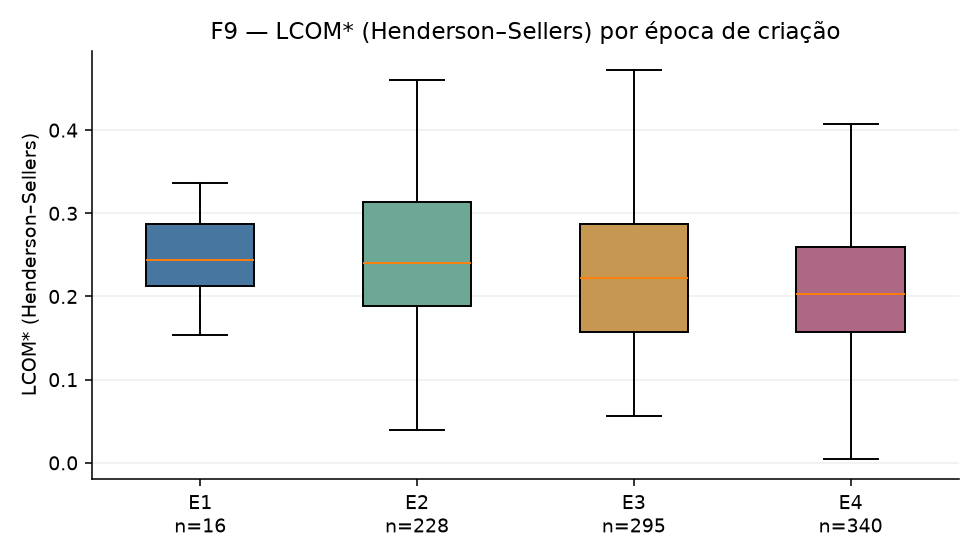
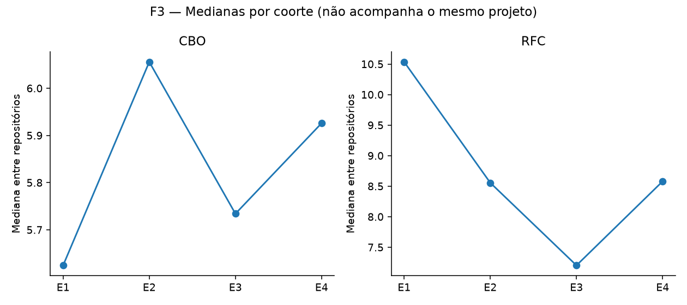
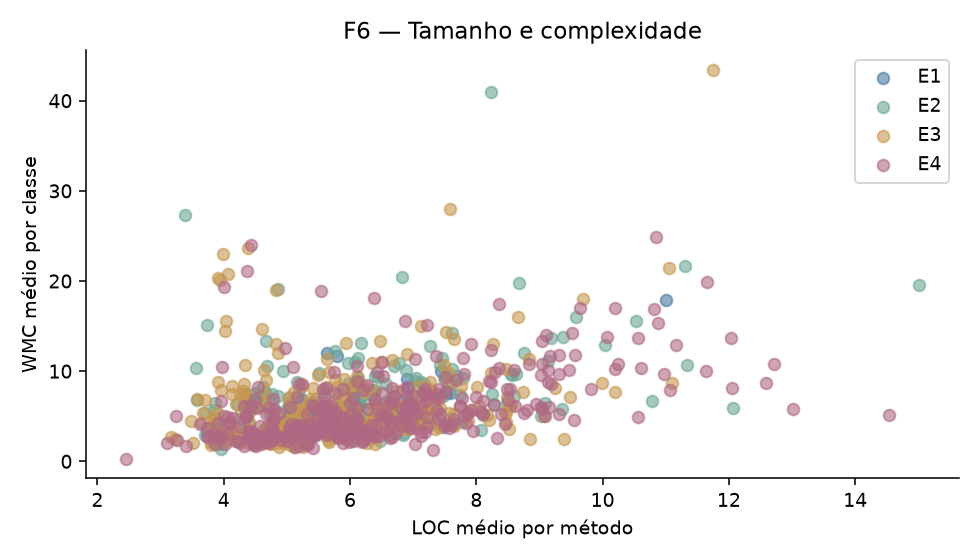
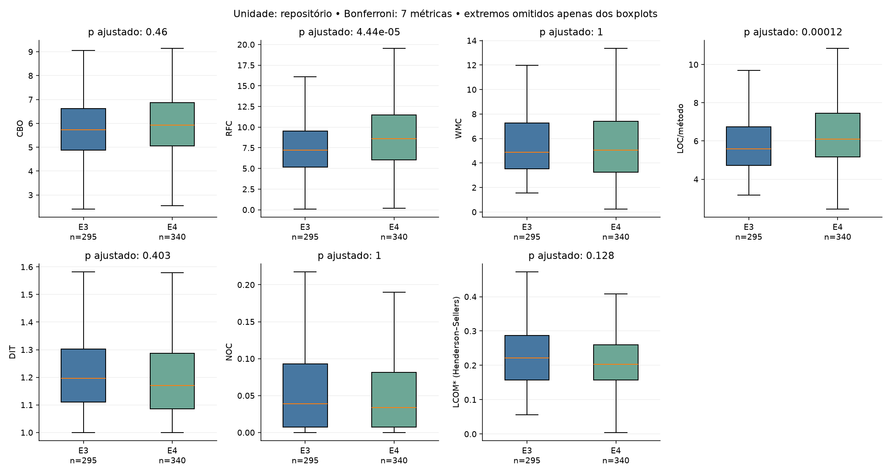
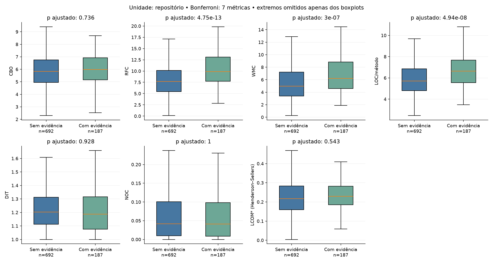
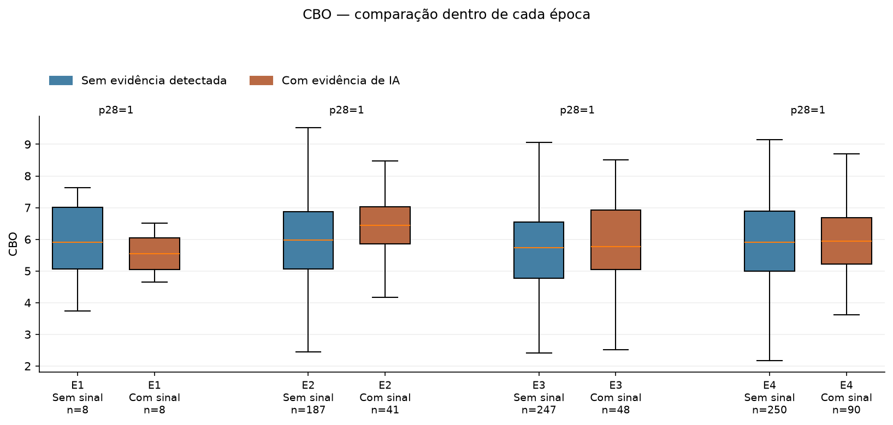
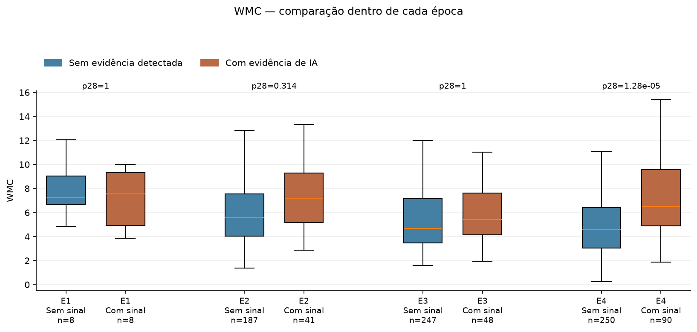
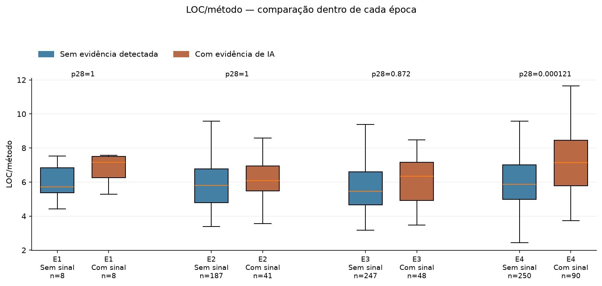
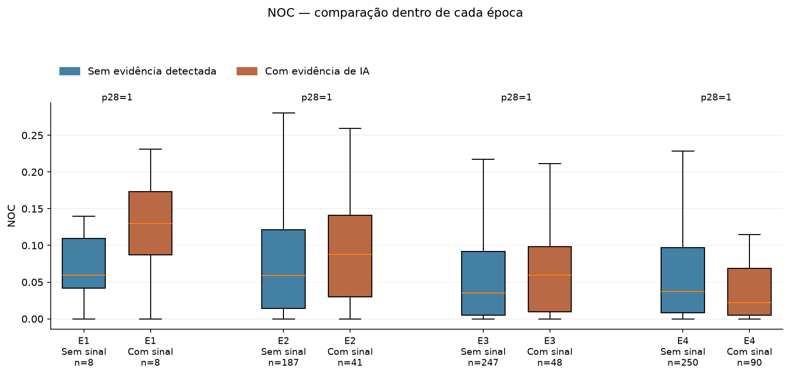
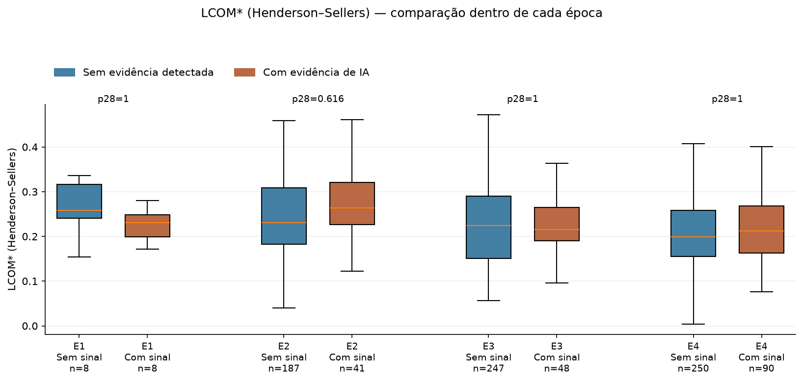
Base principal / Power BI · Todos os processados · Classificações · Atrito por época/grupo · Exclusões · Plano fixado · Configuração e hashes
CSV de cada célula em subsets/E1…E4/; fontes de evidência, métricas de classe/método compactadas, SHA do commit e diagnóstico por repositório em repositories/. Gráficos em PNG e SVG. Intervalos apresentados são quartis descritivos, não intervalos de confiança.